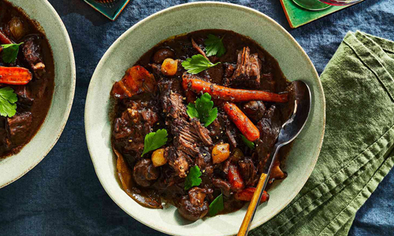

Beef Stew

Ingredients
- 3 tablespoons olive oil
- 1 tablespoon butter
- 2 pounds beef stew meat
- 3 cloves garlic, minced
- 1 medium onion, diced
- 1 can or bottle beer
- 4 cups beef broth, more as needed
- 1 tablespoon Worcestershire sauce
- 2 to 3 tablespoons tomato paste
- 1 1/2 teaspoons sugar
- 1/2 teaspoon paprika
- 1/2 teaspoon kosher salt
- Freshly ground black pepper
- 2 carrots, roughly sliced
- 2 parsnips, roughly sliced
- 1 small turnip, roughly sliced
- 2 tablespoons all-purpose flour, optional
- Minced fresh parsley, for garnish
Directions
-
Heat the oil and butter in a pan and brown the beef. Remove the beef
from the pan, throw in the garlic and onions and cook until softened,
about 3 minutes. Pour in the beer, beef broth, Worcestershire sauce,
tomato paste, sugar, paprika, salt and some pepper. Then return the beef
to the pan, cover and simmer on a low heat until the meat is very
tender, 1 1/2 to 2 hours. If the liquid level gets too low, add more
broth as needed.
-
Add the carrots, parsnips and turnips and continue to simmer until the
vegetables are tender and the liquid is reduced, about 30 minutes.
-
If the stew is still too liquidy, remove a cup of cooking liquid from
the pan and stir in the flour. Add the flour mixture back into the pan
and stir. Simmer for 10 minutes until the stew is thick. The meat should
be very tender; if it's tough, let it continue to cook.
- To finish, add the parsley and stir through the stew.